The squad
All players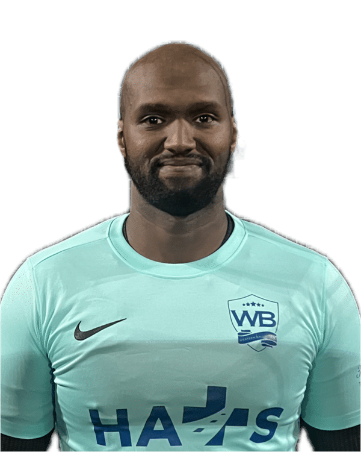
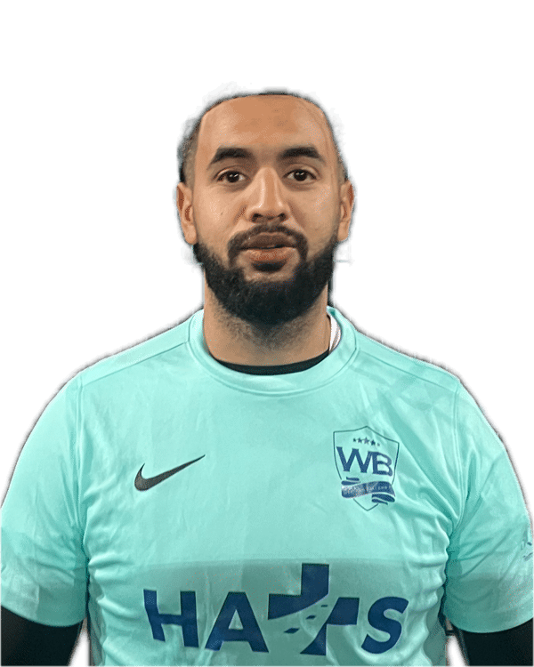
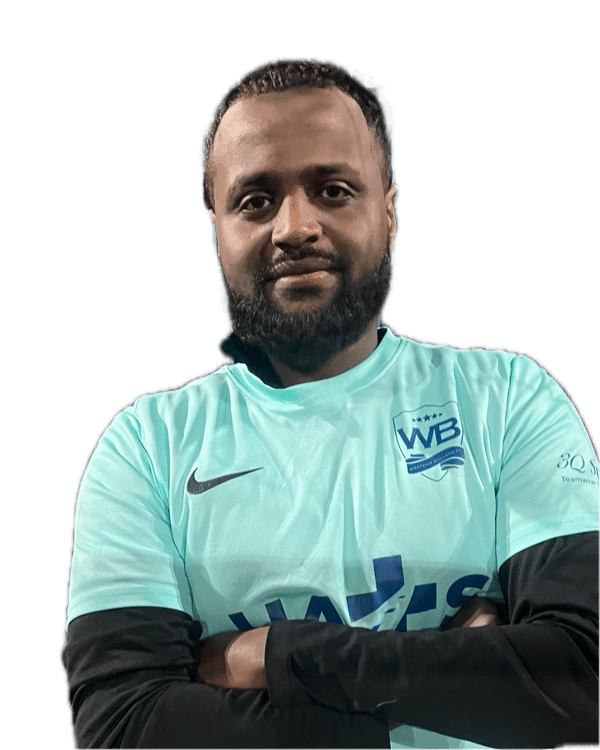
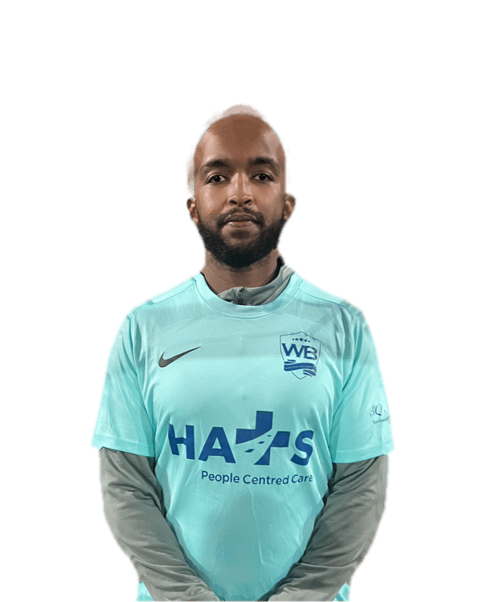
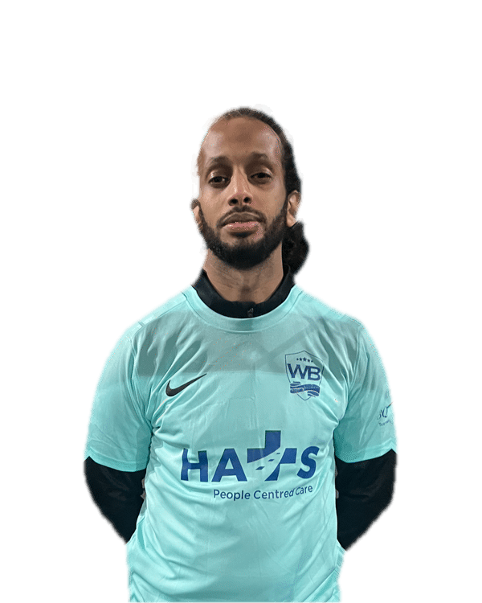
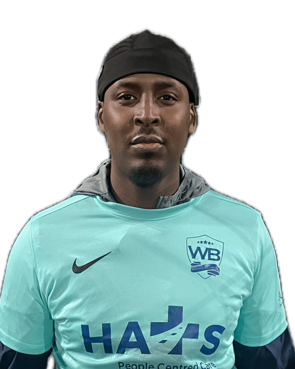
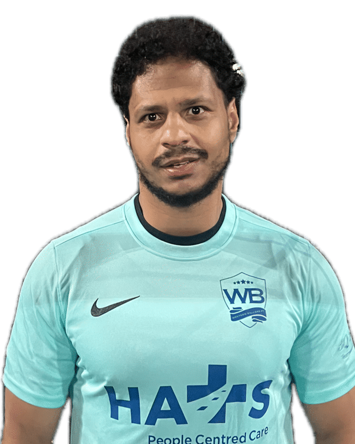
- Skinz
- Yusuf TT
- Adam O
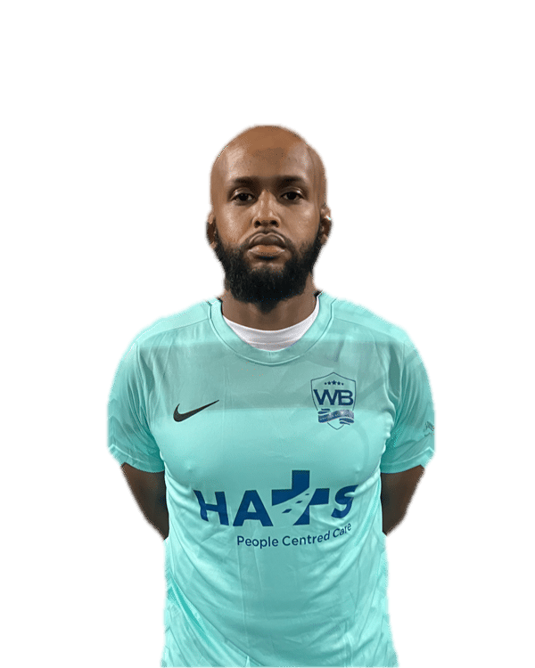
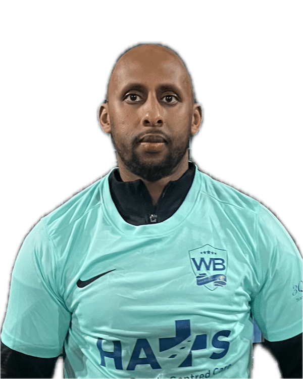
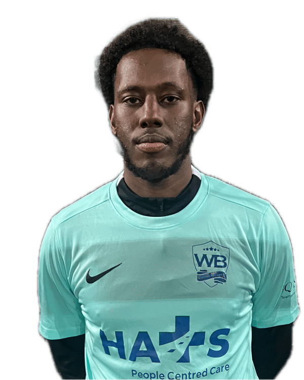
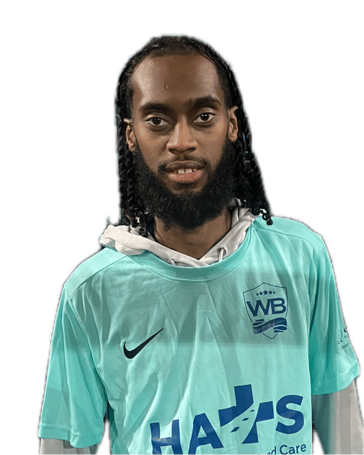
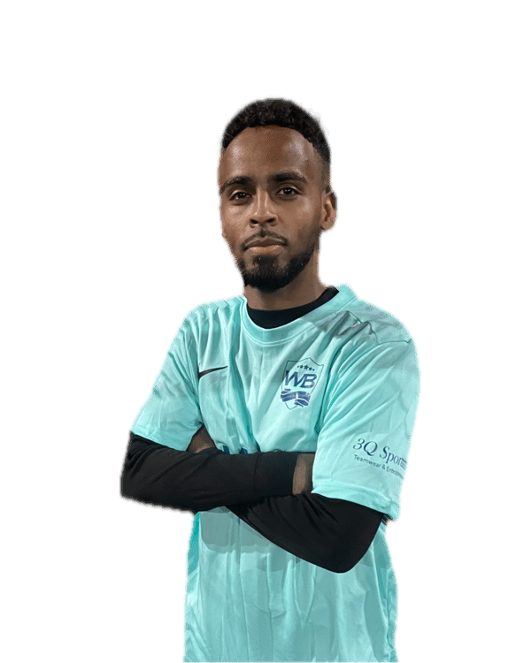
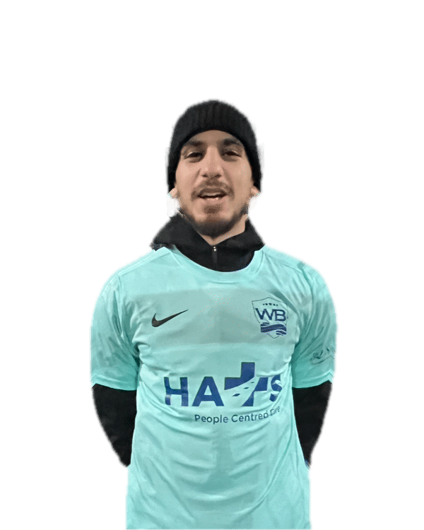
- Dualeh
- Yusuf Isco
- Hamza G
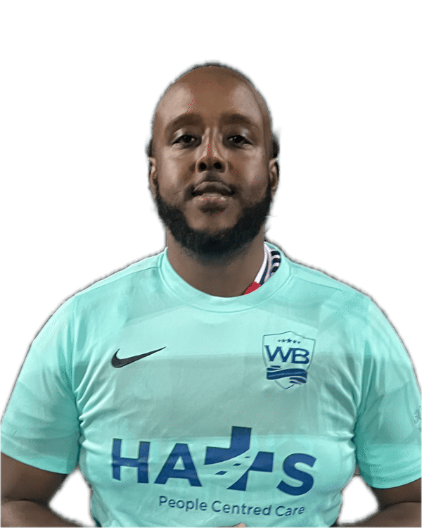
- Ali Awil
Last result
Match CentreChecking the last result…
Earlier issues
-
Nappy Gate: who left them in the goal?
A pack of adult nappies turned up in the net at full time. The club wants answers.
-
No likey, no lighty
Hanad Grove new position? · Committee looking for a new pitch to play at?
-
Golden goal row, lights out, one suspension
Ali Awil and Mo Bouch light up their debuts as the sides share six games, 3–3. Then Sudz turns the lights off. The fallout has split the club.
-
Injury crisis deepens as six miss tonight's session, but Ruislip returns
Three players make their debut, including neighbourhood baller Saeed Messi, while Chairman Sheikh Ahmed Milky is expected in the stands.